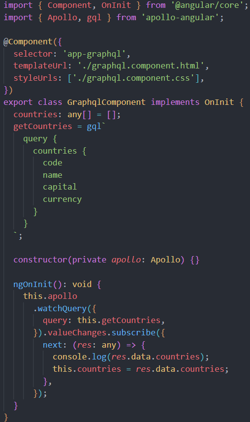
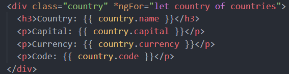
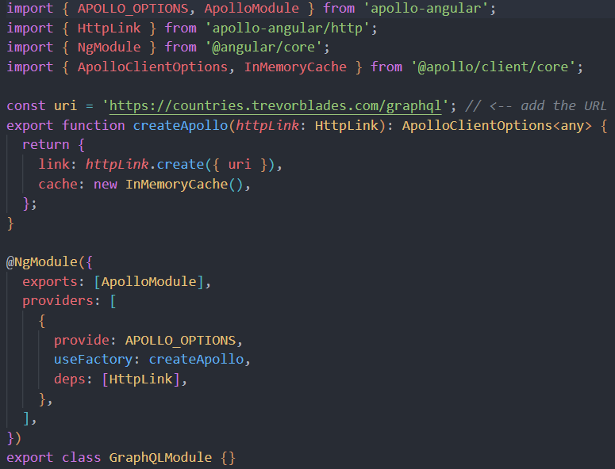

<app-graphqlnav></app-graphqlnav>
<div class="container">
  <div class="countries">
    <div class="country" *ngFor="let country of countries">
      <h3>Country: {{ country.name }}</h3>
      <p>Capital: {{ country.capital }}</p>
      <p>Currency: {{ country.currency }}</p>
      <p>Code: {{ country.code }}</p>
    </div>
  </div>
  <h3>Steps</h3>
  <ul>
    <li>ng add apollo-angular</li>
    <ul>
      <li>
        using the angular cli, the graphql.module.ts file will <br />
        automatically be added to the project
      </li>
    </ul>
    <li>add url to GraphQL api</li>
    <ul>
      <li>
        this example is using <br />
        https://countries.trevorblades.com/graphql
      </li>
    </ul>
    <li>define your query, here it is 'getCountries'</li>
    <ul>
      <li>
        this is useful, because we can choose exactly the <br />
        data we want to receive, no more, no less
      </li>
    </ul>
    <li>
      OnInit, we call the watchQuery method on our <br />
      injected Apollo variable
    </li>
    <li>
      we set the response equal to our countries array, to be used in the
      template
    </li>
  </ul>
  
  
  
</div>
